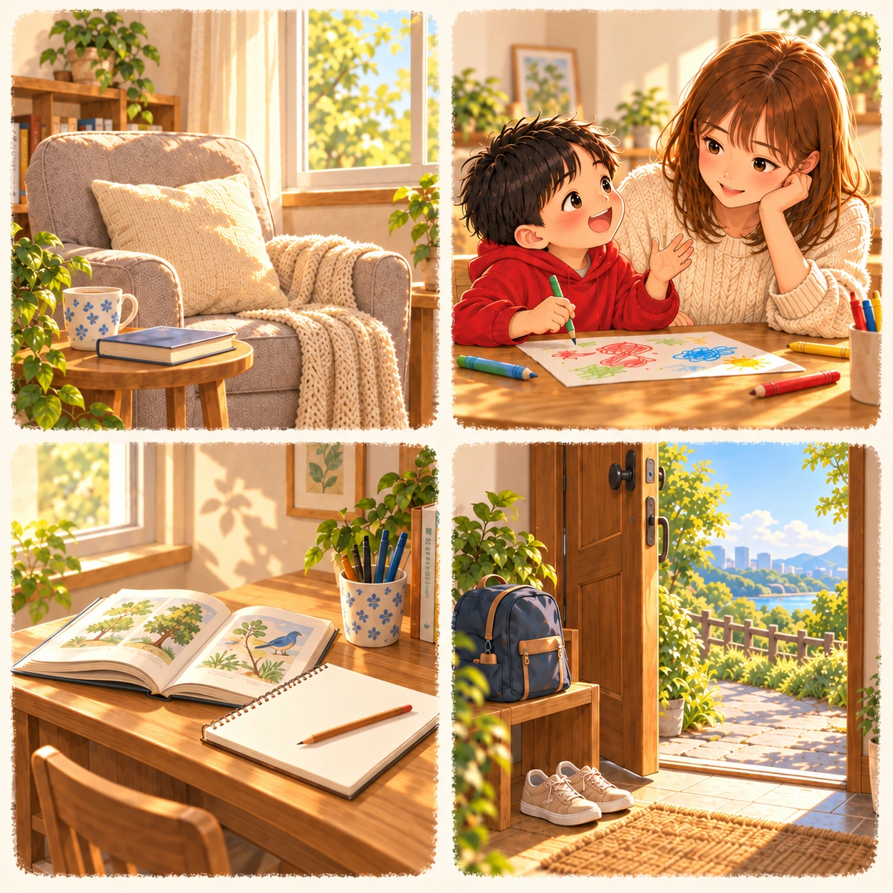

你選了 A｜安靜休息
你想安心休息一下
選這個畫面，可能是最近真的有點累了。你想要一個不用趕、不必隨時回訊息的地方，能坐下來喝完一杯熱茶。
你在意的生活餘裕
對你來說，錢帶來的餘裕，可能包括把生活照顧好、替自己留一點緩衝。遇到事情時，不用馬上把原本的休息時間也拿去填滿。
今天可以試試
先替自己留半小時不安排事情的時間，再看看哪些忙碌可以減少一點。
有時候，忙著把每一天過好，
也會忘記問自己：現在最想把時間留給什麼？

跟著第一個念頭選，點選後就能看解析
選這個畫面，可能是最近真的有點累了。你想要一個不用趕、不必隨時回訊息的地方，能坐下來喝完一杯熱茶。
對你來說，錢帶來的餘裕，可能包括把生活照顧好、替自己留一點緩衝。遇到事情時，不用馬上把原本的休息時間也拿去填滿。
先替自己留半小時不安排事情的時間，再看看哪些忙碌可以減少一點。
你想留給家人的，往往是看起來很普通的日常。能聽完孩子一個故事、一起吃頓飯，或只是坐在身邊。
對你來說，收入也代表陪伴的選擇。你希望努力之後，有空回到在意的人身邊。
今天先留十分鐘，放下手機，把他想說的話聽完。
你希望忙完之後，還有一點時間留給自己。翻一本書、學一樣想學很久的事，都能讓你感覺生活有新的可能。
金錢對你的意義，可能是可以持續成長、保有換方向的空間。你想要更有底氣做選擇，也想知道自己還能走到哪裡。
把想學的事挑一件，先從一個很小的練習開始。
你嚮往的是能自己決定節奏的生活。想出門時有空去走走，想換個環境時，也有餘裕替自己安排。
你希望金錢帶來的，可能是選擇空間。能決定把時間用在哪裡，也能在生活太擠的時候，替自己留一條出口。
先安排一段不用趕路的散步，看看什麼樣的步調，才讓你感覺舒服。
這是一個整理當下偏好的直覺練習，沒有標準答案。選擇也可能隨著你的近況改變。
想多一點時間陪孩子，也常常會讓我們回頭想：現在的生活，有哪些地方可以慢慢調整？
Hanna 也曾在懷孕時為未來感到不安。後來，她從交易新手開始學習，慢慢走到能帶領新手的位置。成為媽媽後，她更在意陪伴孩子的時間，以及一家人的生活品質。
她是「教路人會交易的Hanna」。如果你也在想，接下來能為自己做些什麼，可以先看看她走過的路。
看看Hanna故事